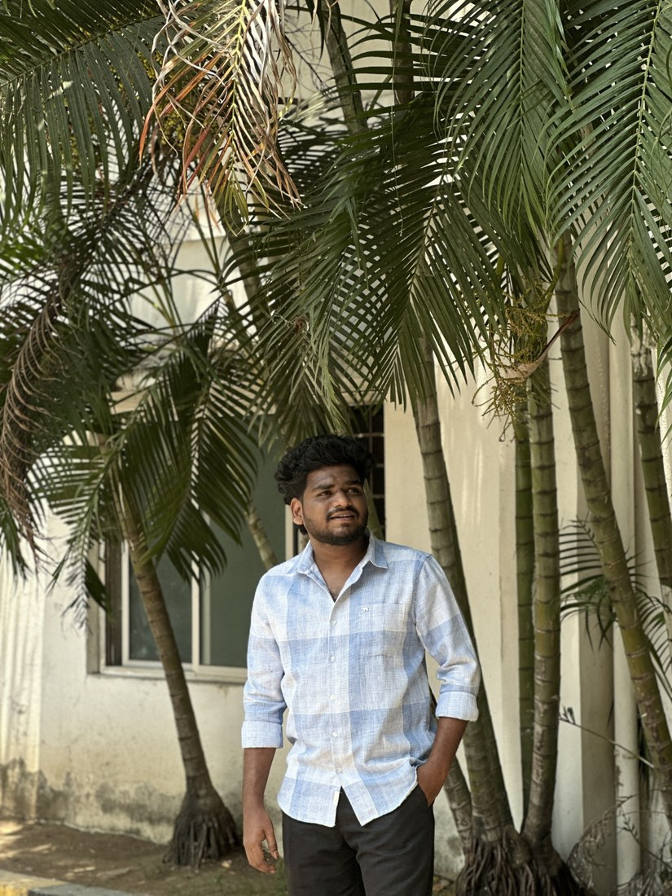

Python
Application development, data processing, modular programming and debugging.
PYTHON • WEB • DATA • AI
I'm Koushik Bodasu, a Computer Science graduate focused on Python-based application development, web technologies, APIs, databases and AI-powered solutions.
class Developer:
name = "Koushik Bodasu"
focus = [
"Python",
"Web Development",
"APIs & SQL",
"Generative AI"
]
def build(self):
return "Learn → Build → Improve"
I enjoy turning ideas and data into practical applications. My projects span Python applications, API integrations, dashboards, predictive maintenance and Generative AI.
I completed my B.Tech in Computer Science and Engineering at Bharath Institute of Higher Education and Research with a CGPA of 8.0/10. I am looking for an opportunity where I can contribute, learn from experienced developers and grow as a Python full-stack developer.
A practical toolkit across development, data and AI.
Application development, data processing, modular programming and debugging.
Web development fundamentals, REST APIs, JSON and API integration.
SQL, MySQL and database concepts for storing and working with application data.
LLMs, RAG, prompt engineering, FAISS, Gemini, LangChain and Streamlit.
Pandas, NumPy, data cleaning, transformation, analysis and visualization.
Git, GitHub, VS Code, testing, debugging and practical problem solving.
Projects that show how I approach real technical problems.
GENERATIVE AI • PYTHON
A Python-based support application using LLMs, RAG, FAISS, Google Gemini and Streamlit to generate context-aware responses. The workflow includes classification, retrieval, response generation, conversational memory, analytics and human escalation.
PYTHON • APIs • JSON
A Python application for retrieving emergency-resource information through structured data processing and API-based workflows, with validation, exception handling and modular application components.
MACHINE LEARNING • INDUSTRIAL IOT
A predictive maintenance project using the NASA CMAPSS dataset, with preprocessing, feature analysis and comparison of LSTM, 1D-CNN, SVM, XGBoost and Autoencoder approaches.
POWER BI • BUSINESS ANALYTICS
An interactive dashboard analyzing sales, profit, orders, returns and regional performance using Power Query, DAX, filters, slicers and KPI visualizations.
Bharath Institute of Higher Education and Research
CGPA: 8.0 / 10Python Programming • HackerRank Python • HackerRank SQL Intermediate • Prompt Engineering
05 / CONTACT
I'm open to Python, web development and software engineering opportunities.
bodasukoushik@gmail.com ↗